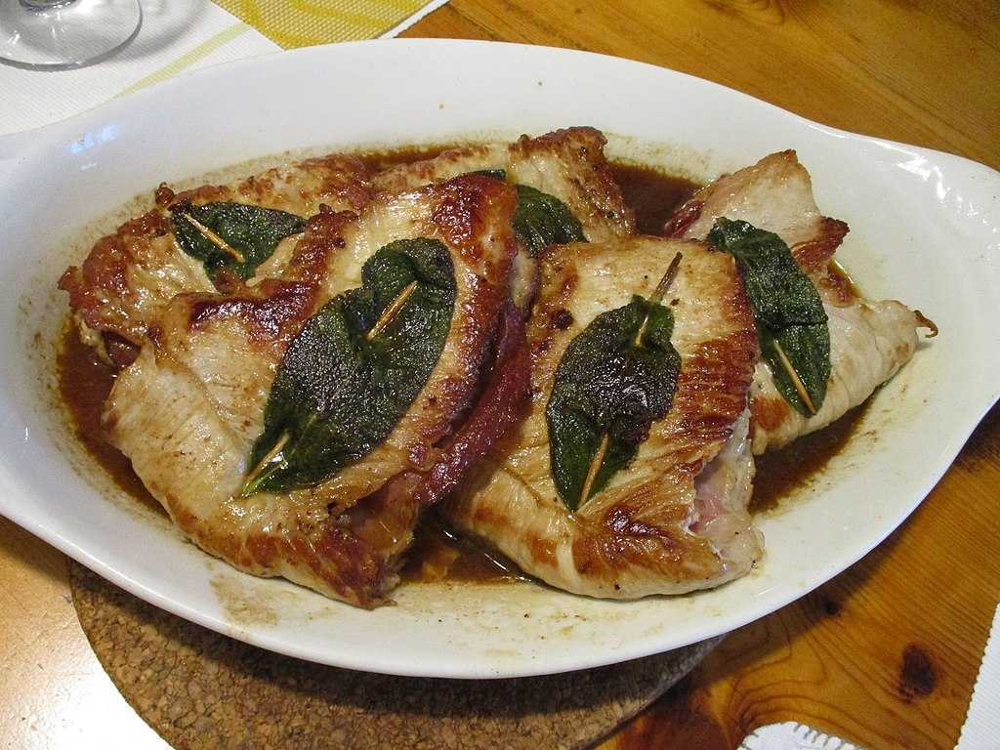

Saltimbocca alla romana

A recipe prepared with veal coated with raw ham and a sage leaf. It is a popular recipe in Rome and in the Lazio region
Ingredients for 1 person:
- Calf meat
- Sage
- Raw ham
- 50g of butter
- Flour
- Pepper
- Salt
Preparation
- Flour the slices of veal
- Add a slice of ham and a sage leaf to the veal slices, securing them with a toothpick
- Heat the butter in a pan
- Cook the veal in butter adding pepper to taste
Back to recipes